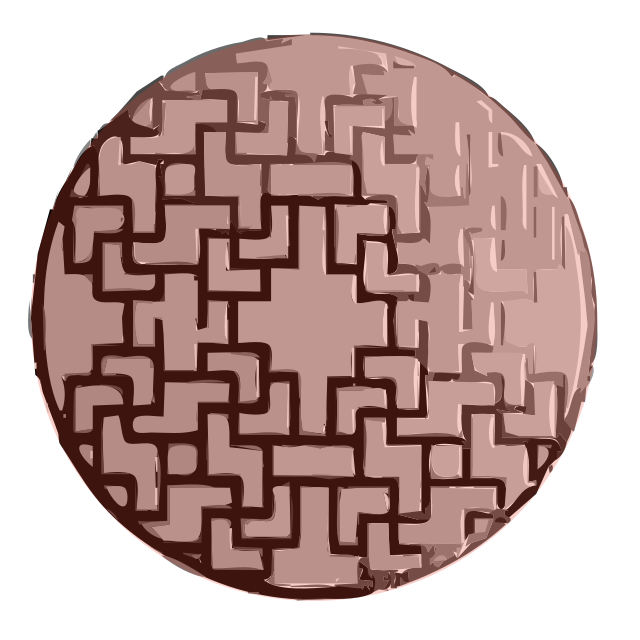

<div class="character-sheet">
  <div class="traits">
    <h2 class="traits-title">Traits</h2>
    <ul class="traits-list">           <!-- Les Traits doivent "coller" au scénario : -->
      <li>Agile comme un singe</li>           <!-- Pour s'enfuir durant l'intro -->
      <!--li>Bricoleur</li>                   <!- - Trop peu utile dans le scénario -->
      <li>Disciple du Kung fu</li>            <!-- Pour se battre contre l'esprit-dragon -->
      <li>Discret comme une ombre</li>        <!-- Pour se cacher de l'esprit-dragon ou du troll-tengu -->
      <li>Entend le chant des plantes</li>    <!-- Pour enquêter dans la forêt -->
      <li>Fort comme un tigre</li>            <!-- Pour se battre contre l'esprit-dragon -->
      <!--li>Observateur</li>                 <!- - Trop générique -->
      <li>Parle aux poissons</li>             <!-- Pour enquêter à la rivière -->
      <li>Rapide comme l'eclair</li>          <!-- Pour se battre contre l'esprit-dragon -->
      <li>Sait les contes &amp; legendes</li> <!-- Pour enquêter -->
    </ul>
  </div>
  <div class="desc">
    <div class="item-group">
      <label>Nom :</label>
      <div class="placeholder"></div>
    </div>
    <label>Activité :</label>
    <div class="placeholder"></div>
  </div>
  <div class="footer">
    
    
  </div>
</div>

<style type="text/css">
@font-face {
  font-family: Odachi;
  src: url('fonts/Odachi.otf');
}
@font-face {
  font-family: XangdaShiny;
  src: url('fonts/XangdaShiny-l4AX.ttf');
}
body { line-height: 1.6; }
.character-sheet {
  height: 60rem;
  width: 51rem;
  background-image: url(dragonframe.svg);
  background-repeat: no-repeat;
  background-position: center;
  background-size: cover;
  margin: 1rem auto;
  font-family: Odachi;
  font-size: 2rem;
}
.traits {
  max-width: 25rem;
  margin: 0 auto;
  height: 37rem;
}
.traits-title {
  margin: 0;
  padding-top: 2rem;
  padding-bottom: 1rem;
  text-align: center;
  font-size: 4rem;
}
.traits-list {
  font-family: XangdaShiny;
  list-style-type: katakana;
  margin: 0;
  padding-left: 4rem;
  padding-right: 0;
}
.traits-list li::before {
  /*content: '';*/
  float: left;
  width: 2rem;
  height: 2rem;
  margin: 0 1rem;
  background-repeat: no-repeat;
  background-size: cover;
}
.desc {
  max-width: 20rem;
  margin: 0 auto;
  font-size: 4rem;
  display: flex;
  flex-flow: column wrap;
}
.item-group {
  display: flex;
  flex-direction: row;
  justify-content: space-between;
  align-items: flex-end;
}
.placeholder {
  border-bottom: 2px solid #aaa;
  flex: 1 0;
  padding-top: 3rem;
}
.footer {
  max-width: 10rem;
  margin: 1rem auto;
  display: flex;
}
.footer img:nth-child(1) { max-width: 4.5rem; }
.footer img:nth-child(2) { max-width: 5rem; }
</style>
